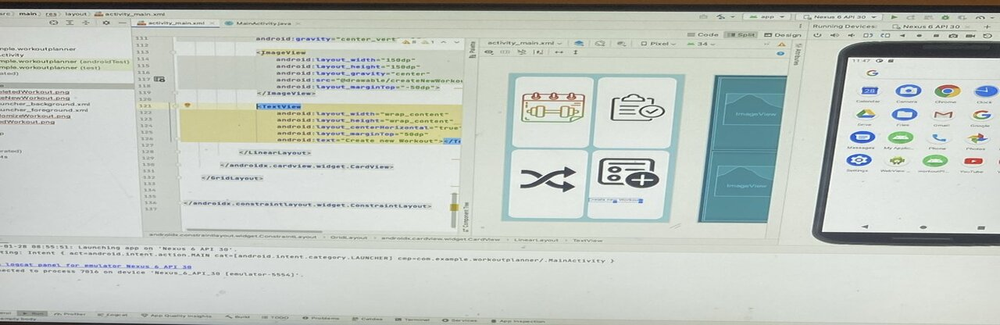
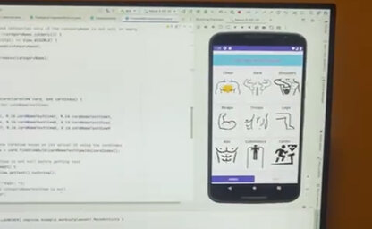
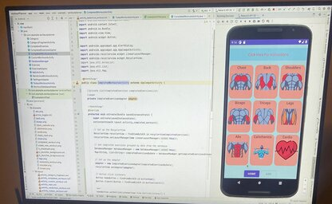

The idea for the Workout Planner arose from my struggles with organizing my workouts. Frequently finding myself in the gym, I often forgot the exercises I had planned. Resorting to using notes helped me remember the exercises, but it didn't offer an optimal user experience for organizing and tracking workouts. This inspired me to create the Workout Planner. Throughout the app's development, I encountered several challenges, which I will discuss below.
Database Setup
Setting up the database class was quite straightforward. I used SQLiteOpenHelper, which facilitated the creation and opening of a SQLite database. Since I had already worked with this before while developing the Course Scheduler application, it didn't pose much of a challenge. Nonetheless, I encountered some small obstacles, such as forgetting to update the database schema when making changes to the DatabaseManager class. It was a good lesson learned
Challenges Encountered
The most challenging part of the development was related to tab deletion. I had successfully set up the tabs, and deletion was functioning as expected. However, a problem arose when a tab was deleted: if another category remained, the app would automatically switch to that tab, which was the expected behavior. However, the exercises under that tab would disappear. After conducting online research, it was suggested to start a new activity to resolve the issue. While starting a new activity did solve the problem, it wasn't the ideal solution because it introduced a 1 or 2 second delay before the exercises reappeared.
To address this issue, I decided to debug and trace the flow of my classes. I discovered that after deletion and requesting the tab to reload the information, the fragment containing the deleted category was being retained. What I wanted was for the app to use the remaining fragments and not retain the fragment with the deleted category. That fragment was supposed to be completely destroyed.
After identifying the cause, I opted to utilize FragmentStatePagerAdapter, which permits all fragments to be destroyed once they are no longer visible to the user. This aligned with the behavior I sought, as when a category is deleted, recalling the tabPager adapter class would set up the remaining visible fragments while excluding the deleted one. This approach also accommodated my intention to allow for a large number of fragments in the app, enhancing its memory efficiency. Upon implementation, this solution successfully resolved the issue. It took me a day and a half to fully comprehend this aspect, as I initially struggled to grasp how fragments functioned. Nevertheless, this challenge ultimately provided me with a robust understanding of managing fragment states within the app.

Initial Categories Design
During the initial phases of the development process, I utilized basic, simple images, as depicted in the image above. Subsequently, I sought feedback from a select group of friends and family regarding the app's appearance. The majority suggested using higher-quality images.

Final Categories Design
Taking this advice into consideration, I contemplated how, as a fitness enthusiast, I would prefer the app to visually showcase body exercises in a more engaging manner. Additionally, I aimed for the images to convey the targeted body part without the user needing to read the category title. This led me to implement changes, resulting in the final product showcased above.
Areas Of Improvement
While the app functions as intended, there's room for improvement, particularly in optimizing the setup of the SQL database and classes to adhere more closely to the SOLID principles of software design. By aligning the code with these principles, it would reduce code smell and enhance maintainability. Additionally, incorporating testing code is essential for ensuring the app's reliability and robustness. Although I have included dependencies for Mockito and Robolectric, actual test code implementation is yet to be integrated. Moving forward, integrating these testing frameworks and developing comprehensive test suites will be a priority to ensure the app's quality and stability.
Areas For Growth
The app has room for additional features. One such feature that could be added is a pie chart summary of the completed exercises. This would give users an idea of how to balance their workouts to ensure all body parts receive equal attention.
Another option would be to include an option that allows users to access demonstrations of the listed exercises. This could be achieved through simple GIFs or links to videos illustrating the exercises.
Furthermore, a share option could be added to enable users to share their results or workouts with friends or on their social media platforms.